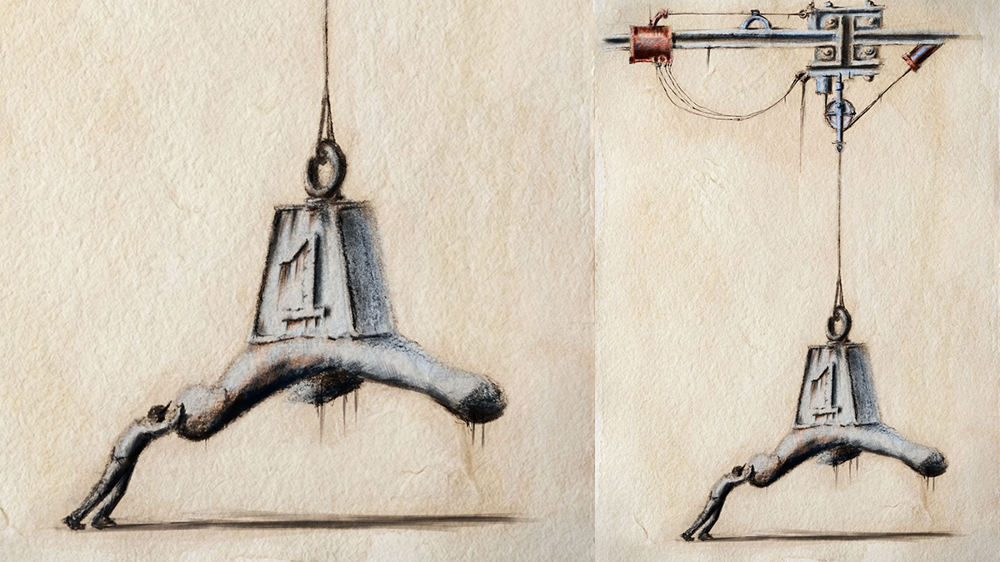

Diario
Heavyweight
Un estudio sobre la densidad absoluta.
Publicado

Un ancla no es una forma: es una decisión. Todo lo que la rodea se vuelve aire porque ella eligió quedarse.
Un ancla suspendida en el aliento sepia del papel. La atmósfera es densa y contenida, detenida justo antes del colapso: el metal no solo existe, dicta su ley de gravedad sobre la carne.
El grafito araña la fibra, creando sombras ahumadas que confieren al peso una densidad mineral. La tinta se desliza como una lágrima negra desde la base del bloque, traduciendo el crujido del hierro y el esfuerzo sordo de la materia.
- Sombra tostada y sepia: tonos profundos y terrosos que evocan óxido y hierro manchado de aceite.
- Negro carbón: tinta saturada para los recovecos más oscuros, donde la luz no alcanza.
- Gris frío: un contrapunto a la calidez del óxido y al tacto gélido del acero.
Acuarela y tinta
La imagen de esta entrada es la misma que la de «Nada se colorea hasta que el dibujo se sostiene solo». La diferencia es el proceso: aquella nota se detiene en el grafito; esta versión es una mejora digital que hice en Krita con la tableta Huion 16″ 4K, ajustando densidad, contraste y negros sobre el dibujo ya resuelto.
No es una segunda obra ni una entrada repetida: es la misma pieza en otra etapa. Primero la estructura; después el peso. La pantalla no reemplaza el papel, solo me deja ver hasta dónde aguanta la imagen antes de volver a la acuarela.